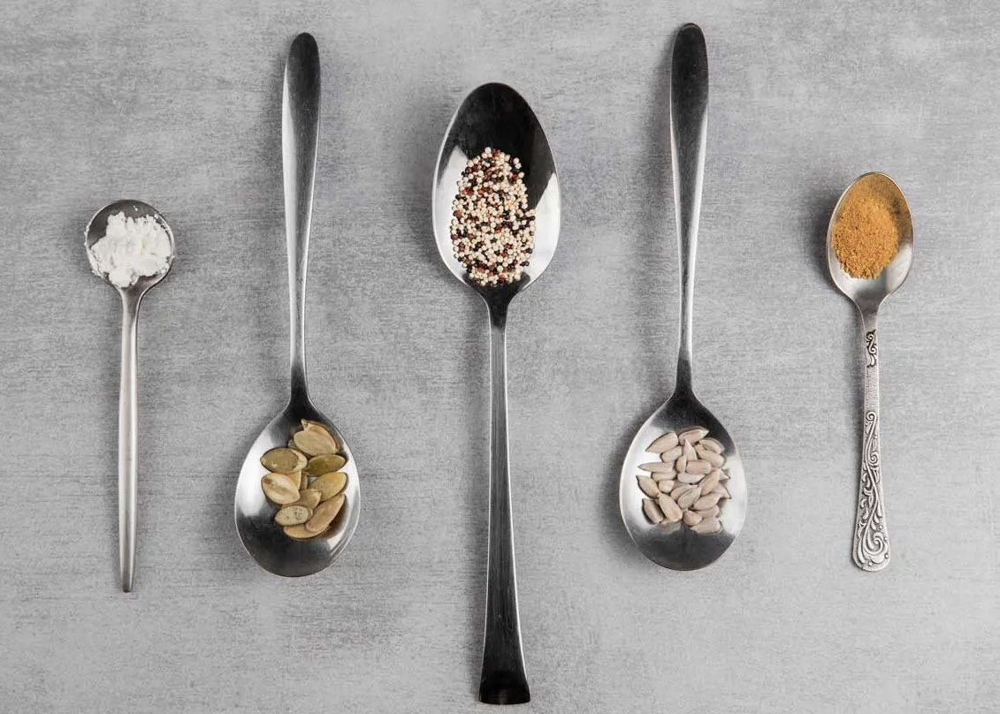
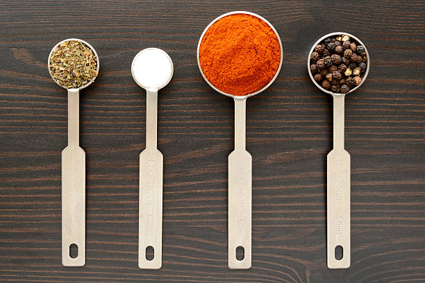
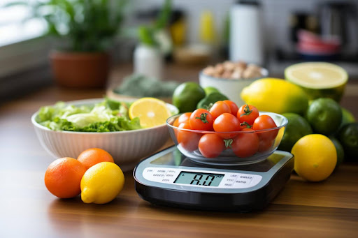

Мерни единици в кухнята: Как да измерим съставките, ако нямаме измервателни уреди

Мерните единици са основата на успешната рецепта. Точността при измерването на съставките е критична, особено когато става дума за печене или сложни ястия. Но какво се случва, ако нямате измервателни уреди под ръка? Тази статия ще ви покаже как да се справите в такива ситуации, като използвате стандартни домакински прибори и други практични методи.
Основни мерни единици в кухнята
- Обем: 1 чаена лъжица (ч.л.) = около 5 мл, 1 супена лъжица (с.л.) = около 15 мл, 1 чаена чаша (ч.ч.) = около 240 мл.
- Тегло: 1 грам (г) = минимално количество, 1 килограм (кг) = 1000 г.
- Температура: Температурите на фурната обикновено се задават в градуси по Целзий. Пример: 180°C = 350°F.
Как да измерваме без уреди?
Кухненските прибори като супени и чаени лъжици и чашите могат да бъдат отличен заместител на измервателните уреди.

Колко грама е една чаена лъжица?
Една чаена лъжица в рецепти се равнява в грамове на:
- Една чаена лъжица вода - 5 грама
- Една чаена лъжица сол - 8 грама
- Една чаена лъжица захар - 10 грама
- Една чаена лъжица пудра захар - 5 грама
- Една чаена лъжица червен пипер - 5 грама
- Една чаена лъжица брашно - 3 грама
- Една чаена лъжица галета - 6 грама
- Една чаена лъжица оцет - 5 грама
- Една чаена лъжица прясно мляко - 6 грама
- Една чаена лъжица кисело мляко - 8 грама
- Една чаена лъжица растително масло - 5 грама
- Една чаена лъжица краве масло - 7 грама
- Една чаена лъжица маргарин - 10 грама
- Една чаена лъжица мас - 20 грама
- Една чаена лъжица ориз - 10 грама
- Една чаена лъжица нишесте - 10 грама
Колко грама е една супена лъжица?
Една супена лъжица в рецепти се равнява в грамове на:
- Една супена лъжица вода - 20 грама
- Една супена лъжица сол - 15 грама
- Една супена лъжица захар - 20 грама
- Една супена лъжица пудра захар - 18 грама
- Една супена лъжица червен пипер - 12 грама
- Една супена лъжица брашно - 10 грама
- Една супена лъжица галета - 12 грама
- Една супена лъжица оцет - 10 грама
- Една супена лъжица прясно мляко - 15 грама
- Една супена лъжица кисело мляко - 20 грама
- Една супена лъжица растително масло - 20 грама
- Една супена лъжица краве масло - 40 грама
- Една супена лъжица маргарин - 50 грама
- Една супена лъжица мас - 50 грама
- Една супена лъжица ориз - 30 грама
- Една супена лъжица нишесте - 20 грама
- Една супена лъжица мед - 50 грама
Съвети за прецизно измерване
- Използвайте нивелирани лъжици: Изравнявайте повърхността с нож.
- Измервайте с пръсти: Щипка сол = количеството, което може да се задържи между палеца и показалеца.
- Измервайте по плътност: Ако рецептата изисква течна съставка като олио или мляко, използвайте прозрачна чаша.

Дори без измервателни уреди, точността в кухнята е постижима с малко знания и креативност. Следвайки тези съвети, ще избегнете грешки и ще развиете усет към правилните пропорции, което ще направи готвенето по-лесно и приятно.